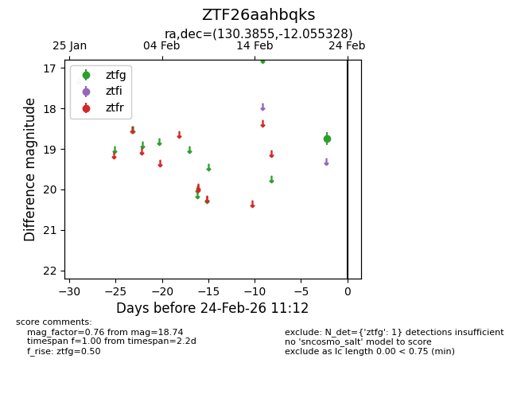
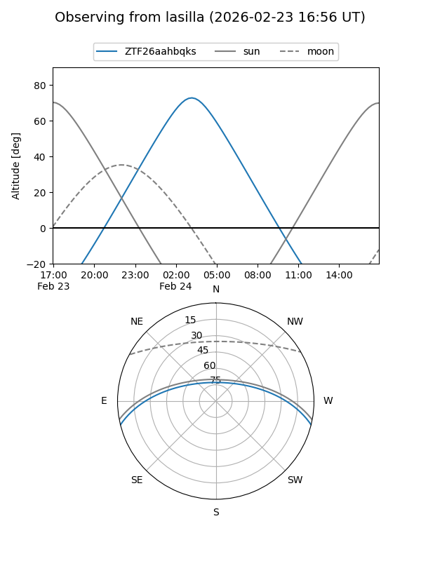
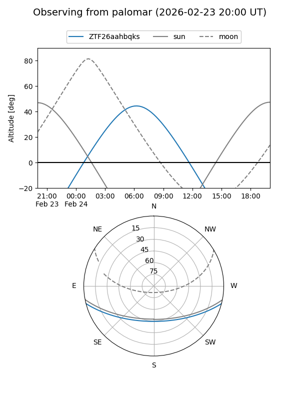

ZTF26aahbqks
Target ZTF26aahbqks at 2026-02-24 11:14
Aliases and brokers:
FINK: link
Lasair: link
ALeRCE: link
alt names
ZTF26aahbqks (ztf,fink_ztf)
Coordinates:
equatorial (ra, dec) = 130.3855,-12.05533
equatorial (HMS+DMS) = 08:41:32.52,-12:03:19.18
galactic (l, b) = (237.2533,+17.87873)
Flags:
Photometry:
last ztfg=18.74
1 ztfg detections
Lightcurve

Visibility


Additional plots